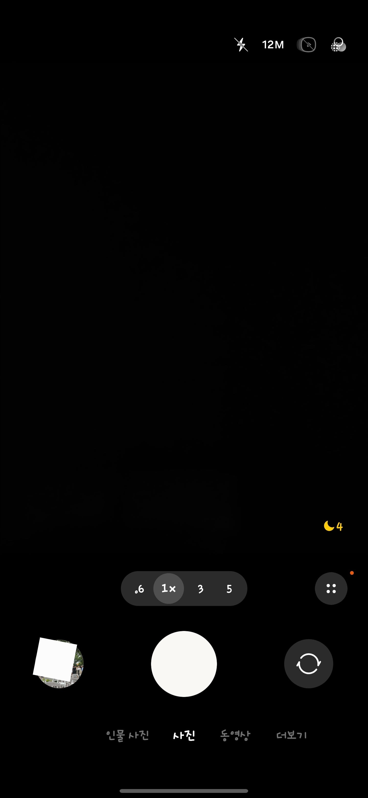
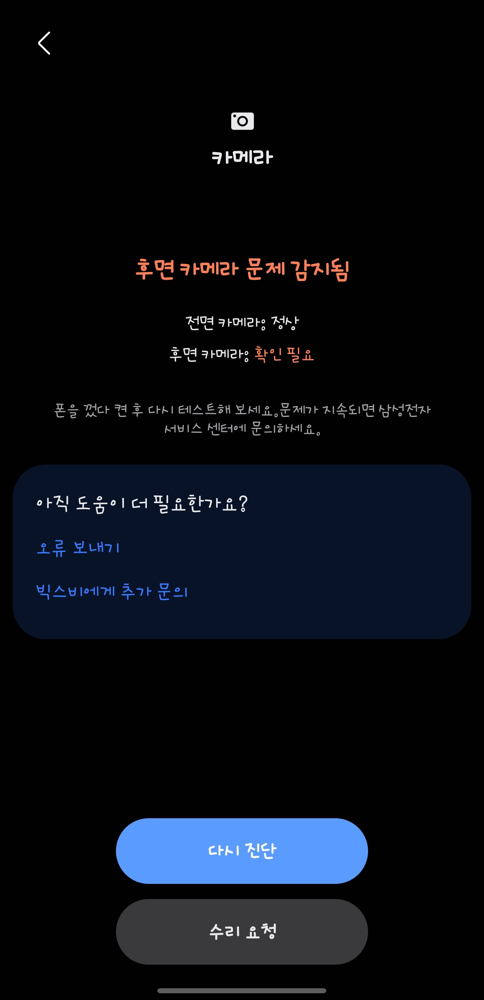

왜 후면 카메라가 지랄이냐 0.6배누르면 렌즈 지원 할수없다하고,
100배줌은 버튼도 사라짐
캐시지우고, 데이터내역 지우고, 껐다키고, 소프트리셋까지 했는데도 지랄이다..
인터넷 찾아보면 레딧부터 멤버스 글들까지 몇개월전부터 같은 증상 수두룩한데
뭔 오피셜 내용도 없고 짜증만 남. 울트라가 카메라 병신이면 울트라가 아닌데


왜 후면 카메라가 지랄이냐 0.6배누르면 렌즈 지원 할수없다하고,
100배줌은 버튼도 사라짐
캐시지우고, 데이터내역 지우고, 껐다키고, 소프트리셋까지 했는데도 지랄이다..
인터넷 찾아보면 레딧부터 멤버스 글들까지 몇개월전부터 같은 증상 수두룩한데
뭔 오피셜 내용도 없고 짜증만 남. 울트라가 카메라 병신이면 울트라가 아닌데
ㅋㅋㅋ
듀오가 너무 까이자너.. ㅋ
문제가 지속되면 서비스센터에 문의해보라는건 안 읽은거니
다 서비스센터만 얘기하네ㅋㅋ이미 예약해뒀고, 멤버스로 오류진단 보고서도 보내놨다. 그리고 인터넷 뒤져보면 고쳐도 다시 재발 하거나 아예 메인보드를 고치라는 글들만 있는데 뭔ㅋㅋㅋ
예약안해도됨 그냥 가면 바로 접수받고해줌
그리고 센터가라는 글 많은 이유가 얘네가 as는 널널할정도로 기준 낮게 잡아서 앵간하면 다 해줌
나도 폴드 내부화면 문제생겨서 갔더니 그냥 갈아주더라
남초사이트에서 해결을 바라고 올린거면 그럼됐네 여기서 뭘 더 해결할수가 있나? 설마 여초 처럼 어머 나쁜지지배네 하고 공감바란거임?
아니지.
듀오처럼 불타오르기를 바라는 거야. ㅋㅋ
난 줌 100, 0.6 다 잘 되는데
아니 아이폰 듀오 이슈 진짜 정훈교육이었나?
애플 주가는 견고하고 여기 붐업 빠르게 오르는거 봐
내 S23+야 너는 아프지 마라 삼케플 끝났다고
삼케플 끝나도 저런건 그냥 수리해줌
무상보증 지나도 해주나보네
ㅇㅇ 자기네들 잘못같으면 그냥 무상해줌
메인보드 문제라는데 무상이라네 1년도안돼서
애플까고 있을때 삼성 까는 글 나왔다고 ㅈㄴ 시니컬한척하면서 서비스센터가면 될걸 여기에 글 왜 올리냐 여초처럼 동정이라도 받고싶냐 비아냥거리면서 댓글다는건 뭐임 작성자만 ㅈㄴ 불쌍하네…
그럴거면 제목부터 잘못썻지.. 내 휴대폰의 문제를 공유하는 것처럼 보이지만 동시에 아이폰 듀오가 화제인 상황에서 갤럭시 S26 울트라를 끌어들이는 구조거든.. 물론 그렇다고 작성자한테 동정받으려 하냐느니 서비스센터 가면 될 걸 왜 글을 올리냐느니 비아냥거리는 게 정당화되는 건 아니지만
ㅋㅋㅋㅋ시발 섭센 다녀오니까 메인보드 바꿔야한다소 해서 낼 다시와야함 자료 백업하고 ㅈ같다 ㄹㅇ
삼성 팬보이 개무섭네;;; 비추 30돌파 ㄷㄷ
삼성에 조금이라도 안좋은글 올라오면 붐업 폭탄 ㅋㅋㅋㅋㅋ
투명하시잖아~
나는 정상인데 소프트웨어 문젠가?
메인보드 나갔다네 회로문제인듯
최악이네 애플유저나 삼성유저나 다른폰을 쓰기 쉽지않은데
어떤걸 구매할지 판단도 못하면 당해야지 뭐
뭘 구매해야하는데 그럼?
이런거 무상수리 해주나?
ㅇㅇ무상이래 메인보드 나가서 백업하고 오래
오오 다행이구마
딱 의도 보이는데?
수리 안 해준다는 것도 아니고
서비스센터가 없는 것도 아니고.
ㅋㅋ
뭔의도ㅋㅋ레딧이나 맴버스도 같은 글 수두룩한데 이슈화 안되는거구만 애초에 내가 갤럭시를 주로 쓰는데
난 또 그 s26u 디플 빨간 고질병 얘기인줄 알았더니 걍 고장나서 고치면되는거 들고왔네.. 섭센간 김에 디플 얘기 좀 해다오
아 이거 같이 얘기해야겠다 ㄱㅅㄱㅅ
삼성수호단들이 이글을 싫어합니다
음습하게 굴지말고 as받으러 가면 문제해결인데